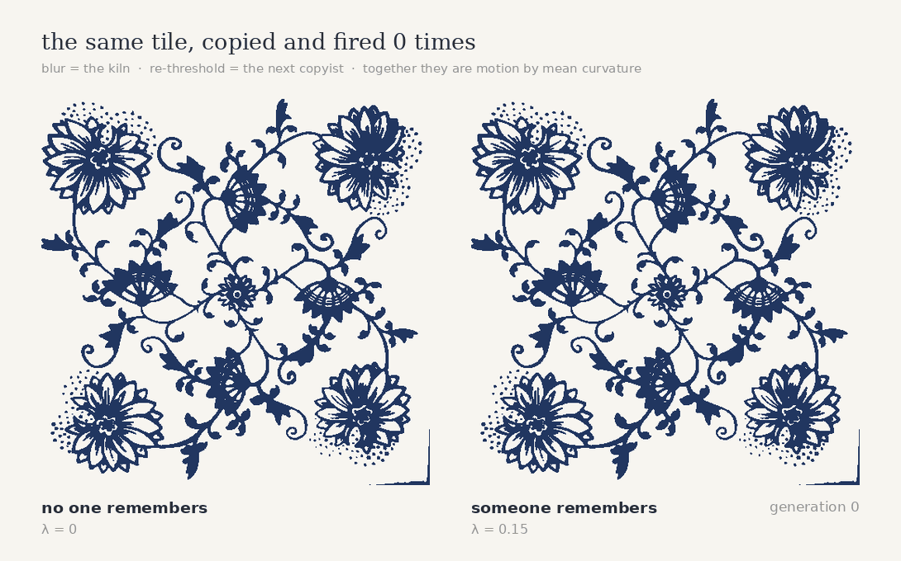

Why is old porcelain never finely drawn?
A kitchen tile in Prague, and the diffusion constant that shaped it.
This is cibulák — Meissen's Zwiebelmuster, 1739, itself a copy of Chinese blue‑and‑white. The onions are not onions. They are peaches and pomegranates, drawn by European painters who had never seen either. It has been copied for nearly three centuries through steadily worse channels, and it still comes out looking like itself.
The tile

One firing
Cobalt is one of very few pigments that survives 1400 °C, which is the real reason almost all high‑fired underglaze on earth is blue. But while it survives, it spreads — into the molten glaze, over a length ℓ = √(2∫D dt). Draw a line thinner than ℓ and the fire takes it back.
Many firings
diffuse cobalt spreads in the glaze → Gaussian blur, σ = ℓ threshold the next copyist inks what she sees → back to black and white
Blurring and re‑thresholding is not a metaphor for copying. It is the Merriman–Bence–Osher scheme (1992), and it converges to motion by mean curvature. Every boundary moves inward in proportion to its own curvature. Thin tendrils are all curvature and die first; round blobs are the fixed points.

The result is negative, and that is the point
Curvature flow has no non‑trivial fixed point. Left alone it does not preserve the design, it eats it — eight generations to lose the identity, sixty to reach nine blobs. Yet cibulák survived three centuries. So the physics is not what preserved it.
The kiln explains why there is no fine detail in blue‑and‑white. It cannot explain why there is still a pattern. For that you need someone who re‑inks not what she sees, but what she knows it is supposed to be.

What the memory buys
The thinnest stroke that survives goes as λ−1/2: measured exponent −0.48 across a decade of λ, against −0.50 expected. Halving the width of the finest detail a tradition can carry costs four times the memory.
| λ | surviving stroke | IoU with original |
|---|---|---|
| 0.00 | 26.0 px | 0.49 |
| 0.05 | 18.1 px | 0.61 |
| 0.10 | 13.1 px | 0.70 |
| 0.20 | 9.3 px | 0.83 |
| 0.40 | 6.5 px | — |
Not established: how this scales with σ. Over the range tested the joint fit gives σ0.70λ−0.55 with 17 % rms, and at large σ the width metric measures blobs rather than strokes, because by then nothing survived to measure. The λ exponent is solid; the σ exponent is not.
Also not established: the activation energy of Co²⁺ in a glaze melt. Over the plausible 200–300 kJ/mol the predicted edge width moves by a factor of 40. Any single number for the bleed length would be decoration. The robust part is the contrast: at every Ea, a 1400 °C firing bleeds 2–5 orders of magnitude more than an 800 °C one.